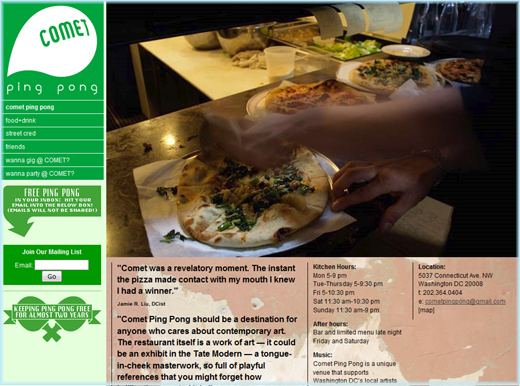

Sei motivi importanti per avere un sito web aziendale
Mentre stai leggendo questo ebook, ho intenzione di assumere avete almeno un importante motivo di creare un sito web. Qui ci sono un paio di più:- Presentare la gamma completa della vostra offerta
Molte aziende hanno più da offrire rispetto ai loro clienti realizzano. La vostra guida scuola offre anche corsi di formazione di sicurezza? Forse la vostra società di traduzione ha recentemente aggiunto coreano alle sue combinazioni linguistiche? Interessante ... Usa il tuo sito web per tenere i clienti nella foto e generare vendite aggiuntive.- Rende la vita facile per i clienti
Alcuni clienti non sono inclini a prendere il telefono o visitare il vostro negozio fuori dal blu. Invece, essi possono preferire per conoscere la vostra azienda prima a loro ritmo. Una presenza online può permettere loro di fare proprio questo.- Pubblicità più efficace
Come si fa a pubblicizzare adesso? Volantini, marketing telefonico e posta diretta può bombardare la vostra clienti e raramente trovare la loro strada sotto gli occhi giusti al momento giusto. ma quando un cliente trova il vostro sito web attraverso Google, c'è una buona probabilità di avere un necessità specifica in mente - e sperano li si può aiutare con una soluzione. questo rende il tuo sito web uno dei metodi di pubblicità più conveniente là fuori.- Tutti i dati di contatti in un unico posto
Rendere più facile per i clienti di trovare tutti i vostri dati in un unico luogo, dai numeri di telefono di indicazioni viaggiare. I vostri clienti vi ringrazieranno.- Vendere i vostri prodotti on-line
Se vendi un prodotto che può essere spedito, non c'è alcun motivo per cui non è possibile impostare un negozio online. Questo aumenta immediatamente il numero di potenziali clienti e prende il vostro mercato a livello nazionale - o addirittura internazionale, se vuoi.- Coinvolgere i tuoi clienti
In questi giorni ci sono una serie di ottimi metodi per coinvolgere i vostri clienti. Perché no provare una newsletter via email? O una pagina di Facebook, o un blog? Questi clienti a basso costo Strumenti relazione esistono per essere utilizzato. Ma andiamo con ordine: il vostro sito web.Che cosa è un costruttore di siti web?
Costruttori sito sono ideali per progetti di piccole e medie imprese con sito web relativamente semplici strutture di pagina. Tradizionalmente questi strumenti non sono stati molto potenti, ei loro risultati dilettanti non erano adatti a siti web aziendali. Tuttavia, questi strumenti sono diventati molto più avanzato negli ultimi anni. Date un'occhiata a questi esempi e vedere la vasta gamma di siti web commerciali, negozi online e blog privati per te: http://tooltester.de/website-showcase
 Website costruttori sono un one-stop shop per le esigenze di tutti tuo sito web: dominio la registrazione (ad esempio yourname.com), spazio di archiviazione online (spazio web), e spesso il vostro proprio account di posta elettronica. Di solito c'è una qualche forma di assistenza tecnica anche nel caso in cui si rimanere bloccati lungo la strada. Modelli di design, elementi e un editor di testo sono anche parte del pacchetto. Diamo uno sguardo più da vicino alcuni degli elementi tipici di un sito web builder.ite.Disegni pronti (templates)
 Costruttori sito rendono facile da tagliare e cambiare tra una gamma di differenti
disegni già pronti. Questo può essere fatto in qualsiasi momento, anche dopo aver riempito il suo
sito web con contenuti, come design e dei contenuti del tuo sito web sono gestite separatamente.
Se la vostra azienda ha un sistema di logo e colori, si può facilmente integrare questi in un
modello. Se non riesci a trovare un disegno che ti piace, è anche possibile utilizzare una misura
disegno, anche se questo richiederà una conoscenza di HTML e CSS.
Costruttori sito rendono facile da tagliare e cambiare tra una gamma di differenti
disegni già pronti. Questo può essere fatto in qualsiasi momento, anche dopo aver riempito il suo
sito web con contenuti, come design e dei contenuti del tuo sito web sono gestite separatamente.
Se la vostra azienda ha un sistema di logo e colori, si può facilmente integrare questi in un
modello. Se non riesci a trovare un disegno che ti piace, è anche possibile utilizzare una misura
disegno, anche se questo richiederà una conoscenza di HTML e CSS.
Elementi
 Un sito web può includere testo, immagini, video, moduli di contatto o prodotti per l'on-line
negozio. Un costruttore sito vi permette di scegliere quali di questi elementi vuoi su
il tuo sito web. È sufficiente trascinare e rilasciare in cui si desidera, quindi personalizzare al
fare clic di un pulsante.
Un sito web può includere testo, immagini, video, moduli di contatto o prodotti per l'on-line
negozio. Un costruttore sito vi permette di scegliere quali di questi elementi vuoi su
il tuo sito web. È sufficiente trascinare e rilasciare in cui si desidera, quindi personalizzare al
fare clic di un pulsante.
Editore
 L'editor consente di modificare il contenuto delle pagine. Per modificare un blocco di testo, semplicemente
cliccaci sopra per aprire la finestra di modifica. Dopo di che, è facile come usare Word. È possibile
anche aggiungere collegamenti a pagine secondarie o altri siti web.
L'editor consente di modificare il contenuto delle pagine. Per modificare un blocco di testo, semplicemente
cliccaci sopra per aprire la finestra di modifica. Dopo di che, è facile come usare Word. È possibile
anche aggiungere collegamenti a pagine secondarie o altri siti web.
Pro e contro dei costruttori di siti web
Se state pensando di utilizzare un costruttore di sito web , si dovrebbe anche essere consapevoli dei pro e contro.
Vantaggi di costruttori sito web
• Facile da usare : non richiede conoscenze di programmazione . Anche il vostro staff otterrà il blocco di esso abbastanza rapidamente . • Tutto ciò che serve in un unico luogo : un dominio, spazio di hosting , email , ecc • Costo : molto ragionevole , con prezzi da USD $ 5 a $ 15 al mese . • Gli aggiornamenti di sicurezza : il vostro provider installare alcun necessaria sicurezza aggiornamenti in background . Gestione dei contenuti open source sistemi , invece , richiedono l'installazione di questi stessi su un base regolare . • Supporto : se rimani bloccato lungo la strada , troverete un sacco di informazioni tecniche supporto via e-mail e forum.Svantaggi di costruttori sito web
• flessibilità limitata : questo è ciò che si tratta veramente basso per - quanto flessibilità sei disposto a rinunciare? Ad esempio, se è necessario utilizzare un layout specifico , si potrebbe trovare un costruttore di Web troppo limitato . l'unico modo per sapere con certezza è quello di fare un tentativo . • Affidarsi a un unico fornitore : è importante il vostro provider è ben gestito da una prospettiva di business , perché potreste perdere il vostro sito web se va busto. Ecco perché è meglio andare con un più affermati provider. • Grandi progetti web : questi sistemi non sono semplicemente appropriati per progetti più grandi o più web-based complesse .Quali competenze ho bisogno?
 Le competenze di cui avrete bisogno di utilizzare un costruttore sito web sono gli stessi di quelli è necessario utilizzare
Microsoft Office ( in particolare Word) . Quando si tratta l'aspetto del tuo sito web
tuttavia, può aiutare ad avere una conoscenza di base del design. Non è necessario essere un
qualificata graphic designer , naturalmente , ma si dovrebbe essere in grado di identificare i colori
e le immagini che possono fare appello ai vostri clienti .
E 'anche una buona idea avere un pacchetto di progettazione grafica per
mano . Adobe Photoshop è senza dubbio il migliore in classe,
ma ci sono molte alternative gratuite :
http://tooltester.de/photoshopalternative .
Per ulteriori informazioni, vedere www.websitetooltester.com
Dare Gimp ( www.gimp.org ) un andare se ti senti ambizioso , ma Picnik
( www.aviary.com ) fornisce tutte le funzioni di base , senza la curva di apprendimento ripida
ed è ideale per i principianti .
Al fine di lavorare in modo efficace con le immagini , è necessario conoscere la differenza tra
formati di file grafici come jpg , gif , png e bmp : . . . . http://tooltester.de/gif-png-jpg .
Il testo dovrà anche essere ben scritto . Ecco una panoramica delle cose che si
necessario tenere a mente quando si scrive per il web : http://tooltester.de/webwriting101 .
Può anche essere la pena chiedendo ad amici e colleghi di rivedere il testo per assicurarsi che
ha senso , è di buona qualità , e, naturalmente, non contiene errori di ortografia o di
grammatica.
Se la progettazione grafica o la scrittura non sono i vostri punti di forza , quindi prendere in considerazione seriamente portando
in un esperto. Un buon progettista o copywriter si assicureranno contenuto riflette l'
più alto livello di professionalità . Potete trovare i fornitori di servizi e di avere un'idea di
i loro prezzi a Elance ( www.elance.com ) , Odesk ( www.odesk.com ) o 99designs
( www.99designs.com ) .
Questi siti permettono di pubblicizzare il progetto e richiedere un preventivo. io
consiglia trattare direttamente con il fornitore del servizio , ove possibile - un
intermediario tende a rende solo più difficile la comunicazione . E soprattutto , fare
Assicurati di controllare le recensioni lasciate per il provider da parte dei clienti precedenti .
Ora si dovrebbe avere una vaga idea se ti senti tecnicamente in grado di utilizzare un
website builder per creare il proprio sito web . Nella prossima sezione ti porterò attraverso
il processo di pianificazione vostro sito dall'inizio alla fine .
Vale la pena di leggere attraverso le sezioni rimanenti prima di prendere una decisione definitiva
se un costruttore di sito web è per voi . E ' importante capire l'esatta
requisiti del vostro progetto web prima di prendere una decisione su quali strumenti di cui avrete bisogno
utilizzare per la sua attuazione .
Le competenze di cui avrete bisogno di utilizzare un costruttore sito web sono gli stessi di quelli è necessario utilizzare
Microsoft Office ( in particolare Word) . Quando si tratta l'aspetto del tuo sito web
tuttavia, può aiutare ad avere una conoscenza di base del design. Non è necessario essere un
qualificata graphic designer , naturalmente , ma si dovrebbe essere in grado di identificare i colori
e le immagini che possono fare appello ai vostri clienti .
E 'anche una buona idea avere un pacchetto di progettazione grafica per
mano . Adobe Photoshop è senza dubbio il migliore in classe,
ma ci sono molte alternative gratuite :
http://tooltester.de/photoshopalternative .
Per ulteriori informazioni, vedere www.websitetooltester.com
Dare Gimp ( www.gimp.org ) un andare se ti senti ambizioso , ma Picnik
( www.aviary.com ) fornisce tutte le funzioni di base , senza la curva di apprendimento ripida
ed è ideale per i principianti .
Al fine di lavorare in modo efficace con le immagini , è necessario conoscere la differenza tra
formati di file grafici come jpg , gif , png e bmp : . . . . http://tooltester.de/gif-png-jpg .
Il testo dovrà anche essere ben scritto . Ecco una panoramica delle cose che si
necessario tenere a mente quando si scrive per il web : http://tooltester.de/webwriting101 .
Può anche essere la pena chiedendo ad amici e colleghi di rivedere il testo per assicurarsi che
ha senso , è di buona qualità , e, naturalmente, non contiene errori di ortografia o di
grammatica.
Se la progettazione grafica o la scrittura non sono i vostri punti di forza , quindi prendere in considerazione seriamente portando
in un esperto. Un buon progettista o copywriter si assicureranno contenuto riflette l'
più alto livello di professionalità . Potete trovare i fornitori di servizi e di avere un'idea di
i loro prezzi a Elance ( www.elance.com ) , Odesk ( www.odesk.com ) o 99designs
( www.99designs.com ) .
Questi siti permettono di pubblicizzare il progetto e richiedere un preventivo. io
consiglia trattare direttamente con il fornitore del servizio , ove possibile - un
intermediario tende a rende solo più difficile la comunicazione . E soprattutto , fare
Assicurati di controllare le recensioni lasciate per il provider da parte dei clienti precedenti .
Ora si dovrebbe avere una vaga idea se ti senti tecnicamente in grado di utilizzare un
website builder per creare il proprio sito web . Nella prossima sezione ti porterò attraverso
il processo di pianificazione vostro sito dall'inizio alla fine .
Vale la pena di leggere attraverso le sezioni rimanenti prima di prendere una decisione definitiva
se un costruttore di sito web è per voi . E ' importante capire l'esatta
requisiti del vostro progetto web prima di prendere una decisione su quali strumenti di cui avrete bisogno
utilizzare per la sua attuazione .